Artifacts of the Indus Valley Civilization

Metal Alloy Fertility Goddess

Terracotta Vessel
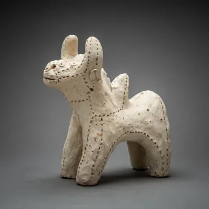
Terracotta Sculpture
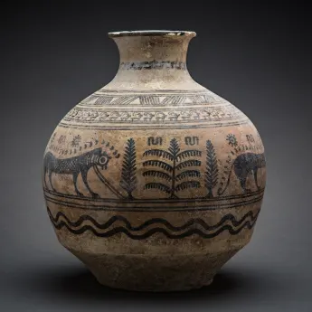
Terracotta Vessel
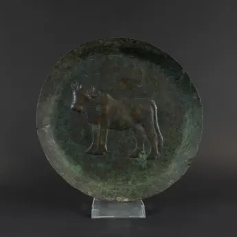
Bull Plate
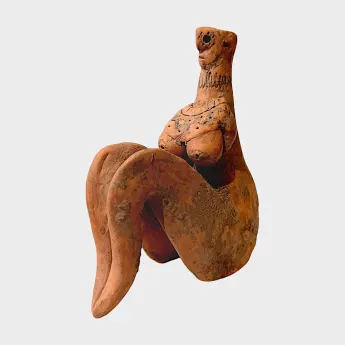
Mother Goddess
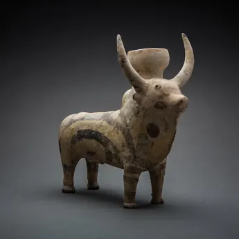
Slip-Painted Terracotta Sculpture of a Zebu Bull
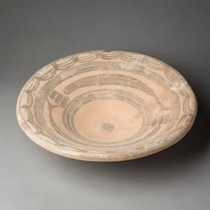
Dish Decorated with Fish
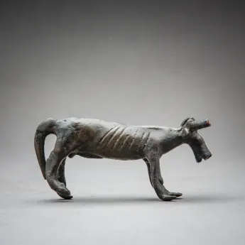
Bronze Bull
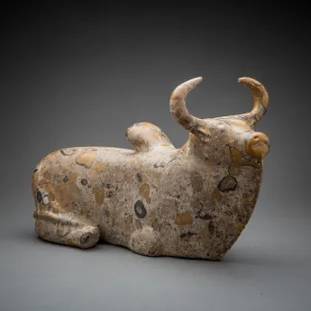
Stone Sculpture of a Zebu Bull

Terracotta Figurine of a Fertility Goddess

Terracotta Figurine of a Standing Fertility Goddess
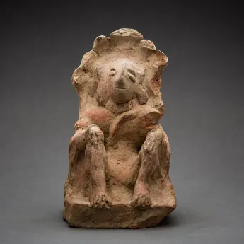
Figurine of a Seated Man Surmounted by a Cobra Umbrella

Group of Painted Indus Valley Terracotta Zebu Bulls
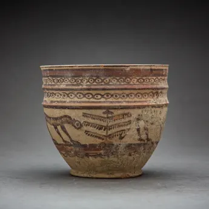
Terracotta Vesse
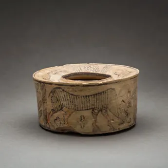
Terracotta Vessel